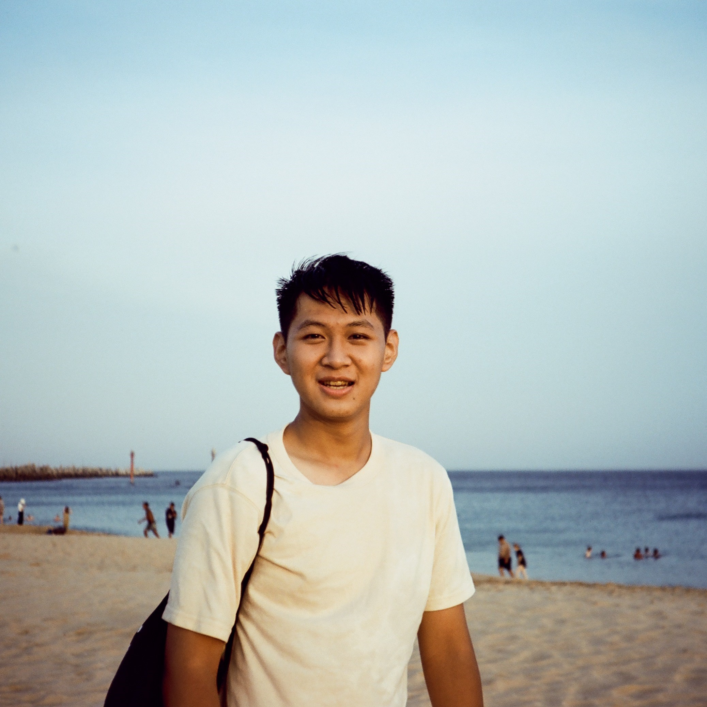

<div class="profile_pic" align="center">
  
<div class="profile_text" align="center"></div>
    <h3>王敬中</h3>
    <h3>Jing-Zhong Wang</h3>
    <br>
    <p>1999年生，新北市人，天秤座。</p>  
    <p>身高172公分，最喜歡的球類是籃球，位置是得分後衛。</p>  
    <p>沒有擅長的事，不擅長的事很多。</p> 
    <p>近期的困擾是失眠問題，黑眼圈很重不知道如何是好。</p>
</div>
